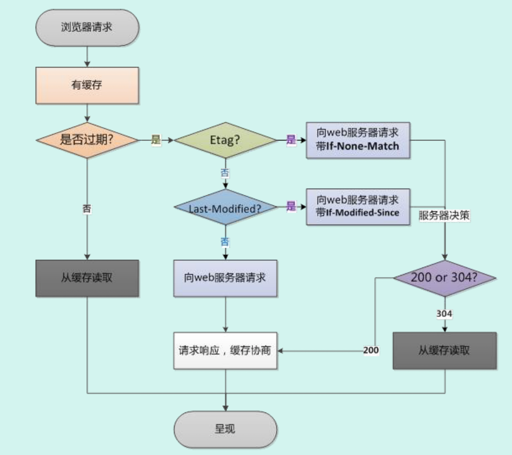

浏览器缓存是前端一个重要的知识点，为了搞清楚强缓存、协商缓存，我决定写一篇博客来提取我零碎的理解并整理。
# 浏览器缓存的概念？
简单来说，就是浏览器将通过 HTTP 请求获取到的资源存储在本地的一种行为。
# 为什么要使用浏览器缓存
有些资源可能下载一次之后很长都不会变动，为了提高访问速度，将其缓存在本地。
可以降低服务器的负担。
# 浏览器缓存的分类
# 强缓存
浏览器加载资源时，会先根据本地缓存资源的字段来判断是否命中资源。如果命中就直接使用缓存中的资源，不会再向服务器发起请求。
# 强缓存相关字段
# Expires
该字段表示一个绝对时间的 GMT 格式字符串，代表着这个资源的失效时间。在此时间之前，则缓存未失效。
但是因为该字段是一个绝对时间，如果客户端和服务器时间差异较大时，可能会导致缓存混乱。
# Cache-Control
主要是利用该字段的 max-age 进行判断，该字段的 max-age 是一个相对时间，例如 Cache-Control：max-age=3600 表示该资源的有效时间为 3600 秒。
除了 max-age 之外，还有几个字段需要留意
- no-cache：需要进行协商缓存，发送请求到服务器表示确认是否使用缓存
- no-store：禁止使用缓存，每一次都要重新请求
- public：可以被所有用户缓存，包括终端用户和 CDN 等中间代理服务器
- private：只能被终端用户缓存。
Cache-Control 和 Expires 可以同时启用，但 Cache-Control 优先级更高
# 协商缓存
当强缓存没有命中的时候，浏览器会发送一个请求到服务器，通过一些字段判断是否命中缓存。如果命中，则返回 304 状态码（未修改）告诉浏览器资源未更新，可使用本地缓存。
# 协商缓存相关字段
# Last-Modify/If-Modify-Since
浏览器第一次请求一个资源的时候，服务器返回的头部中会带有 Last-Modified，这个字段标识着这个资源的最后修改时间。
当浏览器再次请求资源时，会在请求的头部携带一个 If-Modified-Since，它的值是之前服务器返回的 Last- Modified，服务器会根据这个和资源的最后修改时间来判断是否命中缓存。
如果命中缓存，则返回 304，Last- Modified 也不会发生改变。
但是有时候资源修改了，但它的内容可能实际上并未变化，这个时候仍然会认为它修改了，不够完善，所以引出了 ETag
# ETag/If-None-Match
这是一个校验码，根据文件内容生成的一个哈希值。ETag 可以保证资源的唯一性，资源变化会导致 ETag 变化。
服务器根据浏览器上送的 ETag 来判断是否命中。
但是与 Last- Modified 不一样的是，就算服务器返回 304，都会再返回一次 ETag，不管有没有变化。
Last-Modified 和 ETag 可以同时使用，不过服务器会优先验证 ETag，Etag 一致的情况下，才会继续比对 Last-Modified。
# 浏览器缓存的工作流程

当浏览器访问一个已经访问过的资源的时候，他会这样子：
- 查看是否命中强缓存，即看本地缓存的头部字段判断是否过期，未过期则直接使用强缓存。
- 没有命中强缓存，则发请求到服务器进行协商缓存，检查缓存是否还可用。发送的请求包括了 If-None-Match（也就是 ETag）给服务器，让服务器比对资源的 Etag 检查，如果一致就让浏览器继续发送 If-Modified-Since，再次比对，都一致，就返回 304，告诉浏览器继续使用本地的缓存。否则就不命中协商缓存。
- 如果不命中协商缓存，服务器就返回一份新的资源，并且返回 200